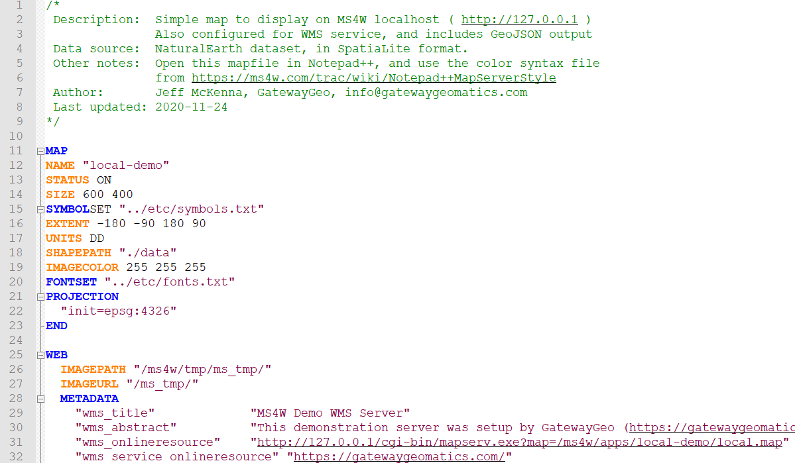
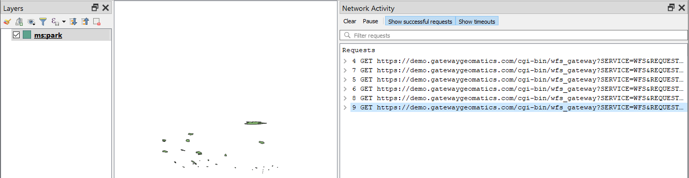

Mapfile Tuning & Management¶
- Author:
David Fawcett
- Contact:
david.fawcett at gmail.com
- Author:
Jeff McKenna
- Contact:
jmckenna at gatewaygeomatics.com
- Last Updated:
2021-04-13
Introduction¶
The contents of a .map file (‘mapfile’) are used by MapServer for configuration, data access, projection, and more. Because the mapfile is parsed every time a map image is requested, it is important to think about what you include in the file in order to optimize performance. The optimal mapfile is one that doesn’t include or reference anything that isn’t needed. The following steps will help you both manage and optimize your mapfiles.
Note
As you optimize your setup, it is strongly recommended to review the security steps for the MAP= call to the MapServer executable, by setting MS_MAP_PATTERN or MS_MAP_NO_PATH or hiding the MAP= parameter on public servers, as recommended in the document Limit Mapfile Access. All possible environment variables to secure your server are listed in Environment Variables.
Steps to Possibly Review¶
1. Use a MapServer Syntax file for your Favorite Text Editor¶
Although it’s maybe not be classed as an ‘optimization’, using a syntax file to add color-coding to MapServer mapfile parameters in your text editor, can help save you time and make your MapServer-mapfile-management-life much easier. You can find a helpful list of these syntax color-coding tools for MapServer listed on the page at Mapfile Editing.
2. Testing your Mapfile for Speed¶
If optimization and performance are important to you, then get to know and love the MapServer commandline utility map2img. map2img will verify that your mapfile creates a valid map image, but it can also display draw times (length of time it takes MapServer to process each layer and the final map image) with the -map_debug 3 setting:
map2img -m osm.map -o ttt.png -map_debug 3
msDrawMap(): rendering using outputformat named png (AGG/PNG).
msDrawMap(): WMS/WFS set-up and query, 0.000s
msDrawMap(): Layer 95 (land13), 0.001s
msDrawMap(): Layer 96 (landuse13), 0.051s
msDrawMap(): Layer 97 (transport_areas13), 0.002s
msDrawMap(): Layer 98 (waterarea13), 0.003s
msDrawMap(): Layer 99 (waterways13), 0.002s
msDrawMap(): Layer 100 (railways13), 0.003s
msDrawMap(): Layer 101 (roads13), 0.024s
msDrawMap(): Layer 102 (aeroways13), 0.002s
msDrawMap(): Layer 103 (buildings13), 0.245s
msDrawMap(): Layer 104 (borders13), 0.197s
msDrawMap(): Layer 105 (places13), 0.078s
msDrawLabelCache(): labelcache_map_edge_buffer = 10
msDrawMap(): Drawing Label Cache, 0.020s
msDrawMap() total time: 0.772s
msSaveImage(ttt.png) total time: 0.056s
The above example generates a map image in 0.772 seconds.
Hint: If you want maximum (verbose) messages, try the -all_debug 5 setting instead.
You can also just get draw times for a single layer with the -l layername switch, such as:
map2img -m osm.map -o ttt.png -map_debug 3 -l buildings13
msDrawMap(): rendering using outputformat named png (AGG/PNG).
msDrawMap(): WMS/WFS set-up and query, 0.000s
msDrawMap(): Layer 103 (buildings13), 0.119s
msDrawLabelCache(): labelcache_map_edge_buffer = 10
msDrawMap(): Drawing Label Cache, 0.001s
msDrawMap() total time: 0.120s
msSaveImage(ttt.png) total time: 0.016s
3. Use the various CONFIG settings for debugging¶
Review the Debugging MapServer document and try setting the CONFIG parameter at the MAP-level in your mapfile, to hopefully get more information from various sources such as from the PROJ library, GDAL library, etc.
MAP
...
CONFIG "CPL_DEBUG" "ON"
CONFIG "PROJ_DEBUG" "ON"
...
LAYER
...
END
END
Note
You can set “CPL_DEBUG” “PROJ” to restrict the information returned to PROJ (and not GDAL in general)
4. Test the full Map Request through the mapserv Executable¶
There are times when your mapfile generates a valid map image with a local map2img command, but then the same mapfile will cause an error in a map request through the web server, such as Apache. It is these times when you should try the same request, that was sent through your web server, at the commandline with the actual mapserv (or on Windows, the mapserv.exe) utility.
The following request will take a full MAP=…&MODE=map request, and try to save the request to an image, or report an error:
mapserv -nh "QUERY_STRING=MAP=/ms4w/apps/local-demo/local.map&MODE=map" > test.png
You can use this to also test problematic WMS GetMap requests as well:
mapserv -nh "QUERY_STRING=SERVICE=WMS&VERSION=1.3.0&REQUEST=GetMap&BBOX=41.42710000000000292,-173.4329999999999927,83.74660000000000082,-13.04809999999999981&CRS=EPSG:4326&WIDTH=369&HEIGHT=98&LAYERS=park&STYLES=&FORMAT=image/png&DPI=96&MAP_RESOLUTION=96&FORMAT_OPTIONS=dpi:96&TRANSPARENT=TRUE" > test.png
Note: Besides checking your web server logs, you can also use QGIS to get the exact request to your OWS (WMS/WFS etc.) service: see https://github.com/mapserver/mapserver/wiki/Get-the-Raw-WMS-Request-Generated-by-QGIS
5. Projections¶
There are two ways to define projections in a mapfile. You can either use inline projection parameters or specify an EPSG code for that projection. If you use the EPSG code method, PROJ looks up the projection parameters in the PROJ database using the EPSG code as an ID. This database lookup takes significantly more resources than when the projection parameters are defined inline. This lookup takes place for each projection definition using EPSG codes in a mapfile.
See also
Projection defined using inline projection parameters
PROJECTION
"proj=utm"
"ellps=GRS80"
"datum=NAD83"
"zone=15"
"units=m"
"north"
"no_defs"
END
Projection defined using EPSG Code
PROJECTION
"init=epsg:26915"
END
Optimization Suggestions
Use inline projection parameter definitions in place of EPSG codes.
It should be stated that for optimal performance you could have MapServer not do any projections on-demand (in other words, have all of your source data in the same projection, and have MapServer output requests in that same projection) but obviously this is not always possible for all scenarios.
If you want to use EPSG codes, remove all unneeded projection definition records from the PROJ EPSG database.
Note
This was a common trick for PROJ versions <6 (and its epsg file), but for PROJ >= 6 a proj.db SQLite database is used to store these EPSG lookup codes, and optimizations for that will take some time to be developed and shared).
6. Use INCLUDEs¶
Implemented back in MapServer 4.10, the mapfile INCLUDE parameter is possibly one of the best ways to help manage your large mapfiles (you might argue that this is not ‘optimization’ for speed again, but for it is very important for managing large mapfiles with many layers).
Any part of the mapfile can be referenced through an INCLUDE, besides the obvious layers.
Note
Common file extensions for includes are: .lyr, .include, or even .map . You can name them any file extension that you wish.
You could have something like:
MAP
...
WEB
INCLUDE "metadata.include"
END
...
INCLUDE "elevation.lyr"
INCLUDE "country.lyr"
INCLUDE "city.lyr"
...
END
Where metadata.include could contain:
METADATA
"wms_title" "WMS Demo Server" ##required
"wms_onlineresource" "http://yourpath/cgi-bin/mapserv.exe?" ##required
"wms_srs" "EPSG:3857 EPSG:4326 EPSG:4269 EPSG:3978" ##recommended
"wms_enable_request" "*" ##necessary
END
7. Layers¶
For every layer in a mapfile that has a status of ON or DEFAULT, MapServer will load that layer and prepare it for display, even if that layer never gets displayed.
Optimization Suggestions
Build lean mapfiles, only include layers that you plan to use.
Turn off unnecessary layers; the more layers MapServer is displaying, the more time it takes. Have your opening map view show only the minimum necessary to orient the user, and allow them to turn on additional layers as needed. This is particularly true of remote WMS or very large rasters.
Related to turning off layers, is turning them on but using MINSCALEDENOM and MAXSCALEDENOM to determine at what zoomlevels the layer is available. If a map’s display is outside of the layer’s MINSCALEDENOM and MAXSCALEDENOM range, then MapServer can skip processing that layer. It also makes for a really cool effect, that the national boundaries magically change to state boundaries.
If you have a complex application, consider using multiple simple and specific mapfiles in place of one large ‘do everything’ mapfile.
In a similar vein, each class also supports MINSCALEDENOM and MAXSCALEDENOM. If your dataset has data that are relevant at different zoomlevels, then you may find this a very handy trick. For example, give a MINSCALEDENOM of 1:1000000, county roads a MINSCALEDENOM of 1:100000, and streets a MAXSCALEDENOM of 1:50000. You get the cool effect of new data magically appearing, but you don’t have MapServer trying to draw the nation’s roads when the entire nation is in view!
Classes are processed in order, and a feature is assigned to the first class that matches. So try placing the most commonly-used classes at the top of the class list, so MapServer doesn’t have to try as many classes before finding a match. For example, if you wanted to highlight the single state of Wyoming, you would probably do this:
CLASS
EXPRESSION ('[NAME]' eq 'WY'])
STYLE
COLOR 255 0 0
END
END
CLASS
STYLE
COLOR 128 128 128
END
END
But it would be a lot more efficient to do this, since 98% of cases will be matched on the first try:
CLASS
EXPRESSION ('[NAME]' ne 'WY'])
STYLE
COLOR 128 128 128
END
END
CLASS
STYLE
COLOR 255 0 0
END
END
Use tile indexes instead of multiple layers.
8. Yes Data Formats Matter¶
This is often not written in documents, yet is often taught in hands-on workshops (as maybe readers or developers can be reading the document here and become offended if it differs in their thinking or the purpose of their software design, as some formats may be deemed ‘uncool’ by some crowds, but in reality, we don’t care about coolness here, we care about making MapServer fast). So the following advice is by the authors of this document (disclaimer), and may offend some readers, therefore ‘viewer discretion is advised’.
Although MapServer can read any GDAL supported vector or raster source (and the fact that not all users will be setting up tile caching beforehand), the following is still recommended for MapServer for optimal performance in terms of data formats.
Optimization Suggestions
The best/optimal data sources for MapServer in terms of speed-of-display is .shp (for vectors) and GeoTIFF (for rasters).
For databases, MapServer displays PostGIS layers very fast, and some custom tricks are included in the MapServer source specifically for PostGIS + MapServer draw speed. PostGIS is therefore recommended.
SpatiaLite is recommended for those who require a portable format, and works very well with MapServer.
For whatever formats you choose, definitely review the associated GDAL format (driver) page for that specific format, and enable indexing (spatial or also attribute indexing).
Rasters, and of course GeoTIFFs, should also have overviews included, through the gdaladdo utility.
Raster layers can also include various PROCESSING directives, specific to raster display in MapServer (such as displaying specific bands, or choosing a resampling method, but for resampling do experiment with the fastest display option versus display quality).
If you do use .shp files (and many still do) you must always enable fast quadtree index lookups in MapServer through the shptree utility.
Wherever possible, making your source dataset as lightweight as possible, will assist MapServer in processing your data (for vectors, this could mean removing unused data fields).
As mentioned earlier, if you must display various rasters or vectors as a ‘mosaic’ together, implement Tile Indexes, to implement the mosaic as a single layer in MapServer.
GDAL’s virtual format (VRT) is very powerful also for mosaicing or transforming data on-demand, and has specific VRT driver instructions for vector and raster .
There are times when splitting .shp files (shapefiles) into smaller files, make it more efficient to display in MapServer; the shp2tile utility is a wonderful commandline tool for this.
Note
For Windows users, MS4W includes the shp2tile utility, and all utilities mentioned above.
9. Enable Caching through MapCache¶
If your mapfile serves any OGC-related service (such as WMS, WFS, etc.) you should consider enabling MapCache, an Apache module, for your services. Caching common map results (as an image file, or inside a SQLite db for example) for common map extents, will obviously drastically improve speed, and cancel-out any format discussions/benefits/arguments mentioned above.
10. Symbols¶
When the mapfile is loaded, each raster symbol listed in the symbols file is located on the filesystem and loaded.
Optimization Suggestions
Only include raster symbols in your symbols file if you know that they will be used by your application.
11. Fonts¶
To load a font, MapServer opens up a lookup file (often named fonts.list or fonts.txt) FONTSET which contains an alias for the font and the path for that font file. If you have a fonts.list file with a long list of fonts, it will take more time for MapServer to locate and load the font that you need.
Optimization Suggestions
Limit the entries in fonts.list to fonts that you actually use.
12. Use MapScript¶
MapScript, in your favorite language such as PHP or Python, can be used to manipulate mapfiles on-the-fly. Some common use cases are:
adding a layer into an existing mapfile
modifying an existing layer
generating a new mapfile/service on-demand
The options here are limitless, for what you can do with MapScript. The full list of available parameters and functions (methods) are listed in the SWIG MapScript API Reference.
13. Don’t expose your MAP path¶
This is more obvious if your mapfile serves OGC services, such as set in the wms_onlineresource metadata parameter in your WEB object, which by default must contain the MAP=path/to/your/mapfile, but exposing paths on your public server can open you to possible malicious attacks on your filesystem. You should take some time to review the possible steps in the document Limit Mapfile Access.
At the minimum, you should enable the MS_MAPFILE environment variable so that your CGI mapserv requests, and your onlineresource OGC requests, do not require a visible MAP= path. The WMS Server document has several examples of how to enable these environment variables.